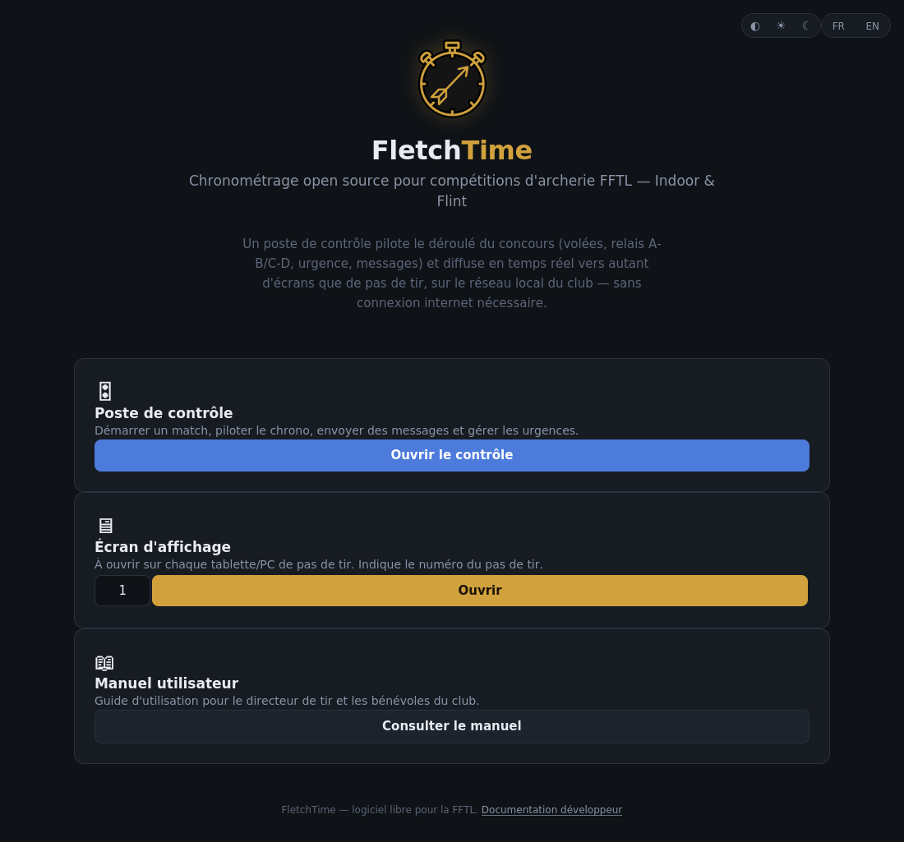
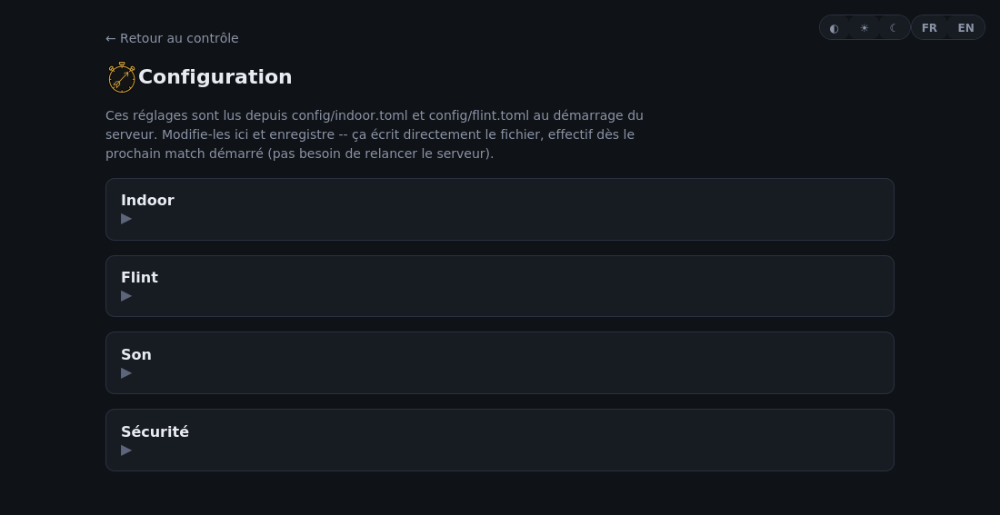
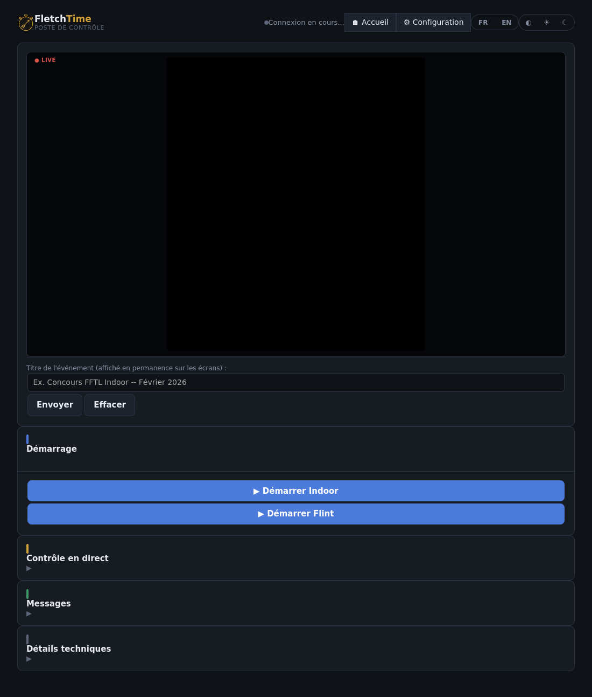
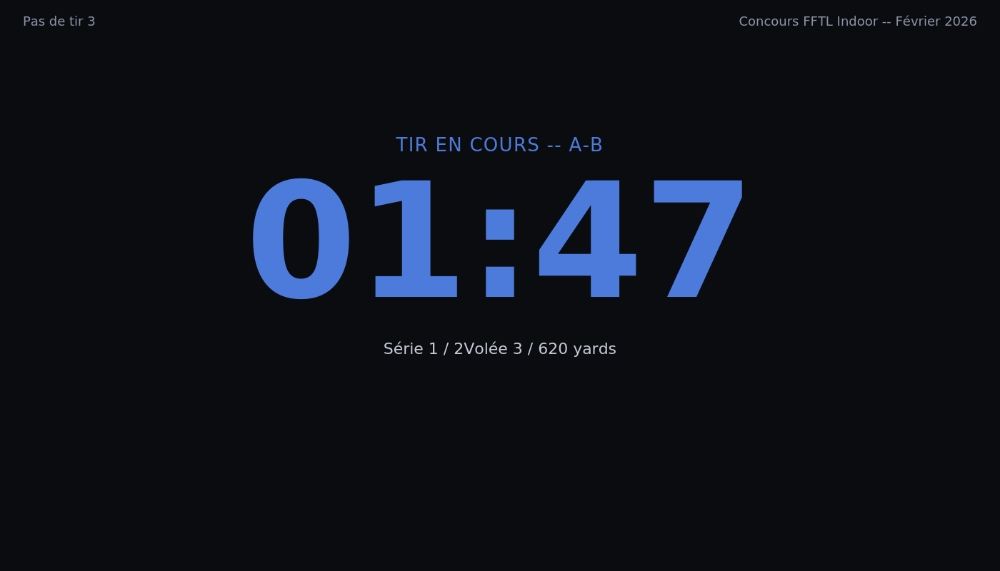

Trois façons de lancer FletchTime, selon ton appareil -- choisis celle qui te convient :
PC (Windows ou Linux), sans rien installer
Télécharge l'archive correspondant à ton système depuis la page "Releases" du projet GitHub.
Décompresse l'archive, puis lance FletchTime.exe (Windows) ou ./FletchTime (Linux).
Avec Python déjà installé (PC, Android via Pydroid 3, ...)
Installe le paquet : pip install fletchtime (dans Pydroid 3 : menu ☰ → Pip → chercher "fletchtime" → Installer).
Lance la commande fletchtime (ou python -m fletchtime). Sur Pydroid 3, lancée depuis le Terminal, la fenêtre graphique ne peut pas s'ouvrir (restriction du Terminal de Pydroid) -- FletchTime bascule alors automatiquement en mode texte, tout aussi fonctionnel.
Depuis un clone du dépôt (pour un développeur)
Installe la dépendance : pip install websockets.
Ouvre le fichier run_server.py à la racine du projet et lance-le (ou dans Pydroid 3 : appuie sur ▶️ Run dans l'éditeur -- c'est ce chemin, pas le Terminal, qui permet à la fenêtre graphique de s'ouvrir sur Pydroid).
Dans tous les cas, une fenêtre s'ouvre avec des boutons pour accéder directement à l'accueil, au contrôle et à l'affichage -- plus besoin de recopier une adresse. Le bouton Démarrer/Arrêter permet de couper le serveur sans fermer la fenêtre. Si la fenêtre ne peut pas s'ouvrir (rare), FletchTime retombe automatiquement sur le mode terminal classique, avec l'adresse affichée en clair -- ajoute --headless après la commande pour le forcer volontairement.
La page d'accueil
Trois raccourcis : Poste de contrôle (pour toi, le responsable du chronométrage), Écran d'affichage (à ouvrir sur chaque tablette de pas de tir, en choisissant son numéro), et ce manuel.

La page d'accueil
Configurer un concours
Avant le jour J, ouvre la page Configuration (lien "⚙ Configuration" en haut du poste de contrôle) pour régler :
Les temps de tir, distances et nombre de volées/flèches de l'Indoor et du Flint
L'ordre des relais A-B/C-D par défaut
Le pack de sons actif
Un mot de passe optionnel pour protéger le contrôle et la configuration (section "Sécurité")
Ces réglages sont enregistrés dans des fichiers texte -- pas besoin de les rouvrir à chaque concours, ils restent en place. Impossible de les modifier pendant qu'un match de ce mode est en cours.

La page Configuration (sections repliées)
Démarrer et piloter un match
Sur le poste de contrôle :
Démarrage : choisis Indoor ou Flint, clique sur le bouton correspondant.
Contrôle en direct se déplie automatiquement une fois le match lancé : Next pour avancer manuellement, Pause/Reprendre pour une interruption temporaire.
Urgence en cas d'incident (le décompte se fige immédiatement), Reprise pour repartir ensuite.
Arrêt pour terminer le match, Recommencer pour relancer depuis le début.
Aller à... permet de sauter directement à une volée précise (utile après une correction ou un incident).

Le poste de contrôle
Connecter les écrans d'affichage
Sur chaque tablette/PC de pas de tir : ouvre la page d'accueil, entre le numéro du pas de tir, clique "Ouvrir". L'écran affiche alors le chrono en direct, synchronisé avec les autres. Le poste de contrôle affiche la liste des écrans réellement connectés.

Illustration -- l'écran d'affichage pendant une phase de tir (les valeurs réelles dépendent du match en cours)
Logo du club et bannières sponsors
Pas besoin de formulaire d'upload : dépose directement les fichiers dans les dossiers concernés (web/assets/club/ pour le logo, web/assets/banners/ pour les bannières). Ils apparaissent automatiquement sur l'écran neutre entre les phases de tir.
Changer le pack de sons
Dans la page Configuration, section "Son" : choisis le pack dans la liste, enregistre. Pour créer ton propre pack, dépose des fichiers audio nommés selon la convention dans web/assets/sounds/packs/<nom_de_ton_pack>/ (voir le README de ce dossier).
Envoyer un message pendant la compétition
Dans la section "Messages" du poste de contrôle : tape ton texte ou choisis un message rapide dans la bibliothèque, puis Envoyer. Laisse le champ "Cible" vide pour toucher tous les écrans, ou indique un numéro de pas de tir pour ne prévenir qu'un seul écran.
Thème et langue
Les boutons en haut de chaque page permettent de choisir clair/sombre et français/anglais -- ce choix est mémorisé sur l'appareil.
Foire aux questions
L'écran affiche juste le logo et l'heure, c'est normal ?
Oui, c'est l'écran neutre -- il redevient actif dès qu'un match démarre.
Un écran de pas de tir ne se met pas à jour, que faire ?
Vérifie qu'il est bien connecté au même réseau WiFi que l'appareil qui fait tourner le serveur.
Je veux tester avant le concours, comment faire ?
Lance un match Indoor ou Flint en configuration réduite (peu de volées) pour vérifier que tout s'enchaîne correctement.
Sous Windows, les autres appareils n'arrivent pas à se connecter, que faire ?
Si 127.0.0.1 fonctionne sur l'appareil qui héberge le serveur mais pas les autres : c'est presque toujours le pare-feu Windows qui bloque les connexions entrantes -- vérifie que FletchTime a bien été autorisé pour les réseaux privés (Paramètres → Confidentialité et sécurité → Pare-feu Windows Defender → Autoriser une application). Si en revanche même 127.0.0.1 ne fonctionne pas sur cet appareil, et que la page affiche un simple listing de dossier avec juste "assets" dedans : mets à jour FletchTime vers la version 0.1.2 ou plus récente (bug d'empaquetage corrigé, sans lien avec le réseau).
J'ai oublié le mot de passe du contrôle, comment faire ?
Supprime le fichier config/auth.toml (à côté de config/indoor.toml) puis relance le serveur -- la protection est retirée, tu peux en redéfinir un nouveau.
Sur Pydroid 3, la fenêtre graphique ne s'ouvre pas, que faire ?
Normal si tu as lancé FletchTime depuis le Terminal de Pydroid -- il bascule alors automatiquement en mode texte, tout aussi fonctionnel (l'adresse à ouvrir s'affiche en clair). Pour obtenir la fenêtre graphique, ouvre plutôt run_server.py dans l'éditeur de Pydroid et appuie sur ▶️ Run.
Les pages se chargent mais restent bloquées sur "en attente de connexion", pourquoi ?
FletchTime utilise deux ports séparés : 8000 en HTTP (les pages) et 8765 en WebSocket (la synchronisation temps réel). Si les pages se chargent mais restent bloquées, c'est presque toujours que seul le 8000 est accessible depuis l'appareil qui affiche la page -- fréquent si le serveur tourne dans un conteneur/VM (Docker, WSL2...) où seul un port a été redirigé. Vérifie que le 8765 est lui aussi redirigé/autorisé.
Le serveur a coupé un instant pendant un match, que se passe-t-il ?
L'écran d'affichage continue de décompter tout seul pendant une coupure brève (WiFi, redémarrage du serveur...), pour que les archers voient toujours un chrono qui tourne, y compris le passage à l'orange et les bips des dernières secondes. Seuls les sons liés à un changement de volée (fin de tir, urgence...) restent silencieux jusqu'à la reconnexion. Le poste de contrôle, lui, affiche une bannière rouge bien visible en cas de coupure -- surveille-la : si la coupure dure, la reprise de contact avec le serveur corrige automatiquement le temps affiché dès que possible.
Plusieurs écrans/onglets sur le même PC jouent tous le même son en même temps, comment l'éviter ?
Ajoute "&mute=1" à la fin de l'adresse des onglets en trop (ex. display.html?lane=2&mute=1) -- coupe le son sur cet onglet précis, sans rien changer d'autre à son affichage. Utile pour plusieurs écrans pilotés par le même PC (multi-écrans, ou simplement pour tester) : comme ils partagent le même haut-parleur, un seul onglet doit jouer le son. L'aperçu dans la page de contrôle est déjà muet par défaut, pour la même raison.